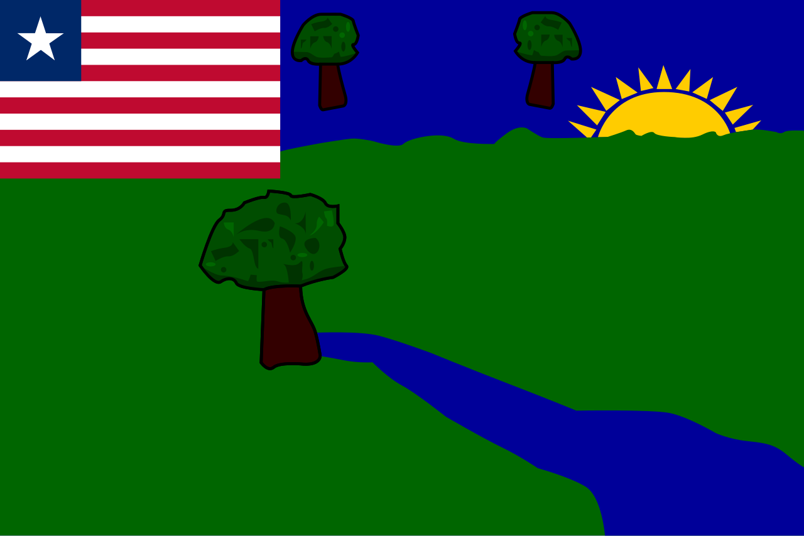

Explore Liberia Interactively
Click on a county to explore its culture, tourism, local government, businesses, and development opportunities.

A unified digital platform connecting all counties in Liberia through tourism, culture, investment, governance, and local community experiences.
Counties
Tourist Locations
Cultural Heritage Sites
United Liberia
Click on a county to explore its culture, tourism, local government, businesses, and development opportunities.
Discover local culture, history, governance, tourism, and opportunities from all counties across Liberia.

Discover coastal charm, fishing heritage, and cultural traditions in this western county.

Explore the educational and cultural heartland of Liberia with rich history and development opportunities.

Experience diverse landscapes, traditional communities, and natural forest resources.

Explore coastal beauty, historic ports, fishing communities, and growing economic activities.

Discover southeastern traditions, agricultural heritage, and natural beauty in this historic region.

Explore pristine beaches, maritime culture, and tropical ecosystems in this southern county.

Discover northern heritage, agricultural prosperity, and vibrant cultural traditions.

Experience urban development, commercial activity, and cultural diversity near the capital.

Explore southeastern heritage, coastal communities, and rich historical significance.

Experience Liberia's capital region with beaches, business centers, and vibrant urban culture.

Discover Liberia's mountainous landscapes, rich mining history, and vibrant local communities.

Explore riverine communities, forest ecosystems, and traditional island settlements.

Discover eastern cultural heritage, diverse communities, and natural resources.

Experience southeastern charm, coastal traditions, and warm island communities.
Bong County stands as one of Liberia's most vibrant counties with strong educational institutions, agriculture, tourism potential, and cultural significance.
Capital City
Region


Explore Liberia's natural beauty, rich traditions, historic landmarks, and vibrant communities across all counties.

Forests, mountains, beaches, and eco-tourism experiences.

Traditional values, festivals, music, and community life.

Agriculture, mining, tourism, trade, and innovation.

This platform connects all counties of Liberia under one modern digital experience, helping citizens, tourists, investors, and organizations discover opportunities and local information.
From tourism and culture to development and governance, each county can have its own digital identity while remaining connected to a unified national system.
Connected Counties
National Platform